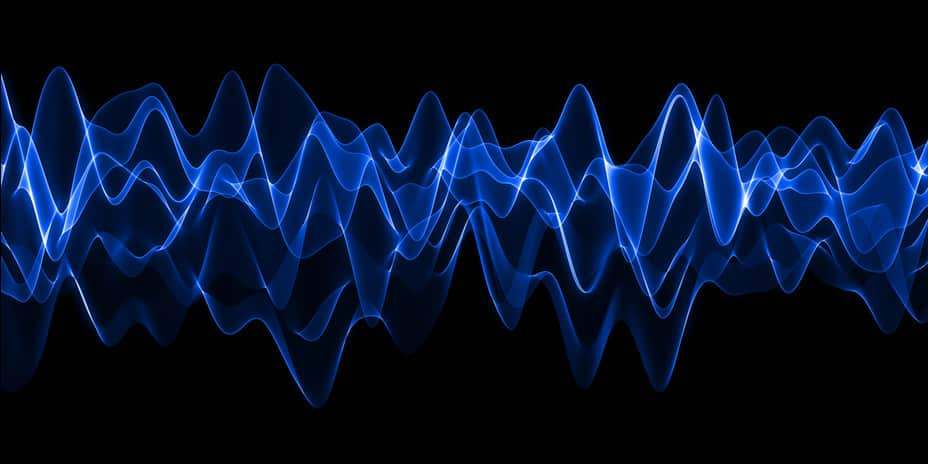

SHATTERING CANCER WITH RESONANT FREQUENCIES (VIDEO PROOF)

This TED Video Shows Undeniable Proof of the Power of Sound Healing.
Have you heard of TED seminars or ‘TED talks’ before?
TED is a nonprofit devoted to spreading ideas, usually in the form of short, powerful speeches (18 minutes or less) and today covers almost all topics — from science to business to global issues — in more than 100 languages.
In this TED video, a music professor explains his pioneering research into destroying cancer with sound frequencies (with video proof).
If you are short on time; I’ve taken the liberty to share the timestamps of the proof in the video… so you can fast-forward straight to the ‘good stuff’ if you want.
Music professor Anthony Holland is usually an orchestra director… but his scientific experiments using sound frequencies quickly led him to a cancer research lab with an important breakthrough.
An astonished scientist once told him: “You’re killing more cancer cells than if you had used radiation therapy” … the same scientist told him “If you had spent millions of dollars researching a drug that killed this many cancer cells – it would be a home run”
Professor Holland demonstrates the science of entrainment using two tuning forks… how the resonance of one fork causes the other to vibrate in harmony with it.
He goes on to explain how entrainment can be used to shatter a crystal glass by singing a sharp note and causing the glass to vibrate at a frequency that it can’t sustain. Professor Holland also goes on to explain how a frequency was able to shatter a large concrete and steel bridge.
Professor Holland wanted to find out if the same principles could be applied to shatter a micro-organism.
The machine they used to apply the frequencies was Dr James Bare’s resonant frequency therapy device.
Dr Bare’s device uses the same technology as the legendary Rife machine.
Professor Holland tried out thousands of different frequency combinations over the period of 15 months while observing under a microscope what it would do to a micro organism.
The secret he discovered is to use two different input frequencies; one high frequency and one low. And the higher frequency must be 11 times the lower – it’s what musicians call ‘the 11th harmonic’.
And when you add the 11th harmonic; you begin to shatter micro organisms… as if they were a crystal glass.
The video goes onto show footage of micro organisms shattering – once exposed to these finely tuned frequencies.
Scientists who were shown the footage were quoted saying they had never seen anything like it.
The next question the scientists asked was: “can you target a specific organism with a specific frequency?”
The video then reveals footage of a micro organism being targeted and destroyed while other ‘friendly’ organisms float around – unharmed.
Then came the most exciting part: actual footage of pancreatic cancer cells being destroyed (12 min’s 6 seconds into video)
Then… Leukemia cancer cells being destroyed (12 min’s 52 seconds into video). You can actually see the cancer cell trying to multiply, but the new cell shatters and the old cell withers.
This indeed proves the healing power of sound..
“We now know that the destruction of cancer cells occurs between the frequencies of 100,000 Hz and 300,000 Hz”
“In repeated lab controlled experiments, they were able to kill on-average between 25% and 42% of the Leukemia cells… with as high as 62%”.
The video goes on to show actual video footage of controlled frequencies killing ovarian cancer cells (14 min’s 8 seconds into video).
You may ask yourself… then why am I not seeing this breakthrough all over the news?
The problem is that the evolution of a new therapeutic medical device from medical research to widespread treatment moves at the pace of a tortoise… often taking decades.
All along this process there are a series of obstacles, such as doctor awareness, FDA approval, and most importantly – pharmaceutical companies attempting to ‘protect their turf’ with any means possible.
Remember that pharmaceutical company shareholders have billions at stake if a new therapy threatens their product. And they will use all their power and influence to distract doctors from the truth.
A classic example of pharma companies making money from misinformation is ‘the lipid hypothesis’ – a hypothesis that has zero clinical proof, yet they misinform doctors in order to get them to prescribe cholesterol lowering drugs… making billions in the process.
Until pharma companies discover a way to patent this therapy in some way; don’t hold your breath on hearing more about it in mainstream media any time soon.